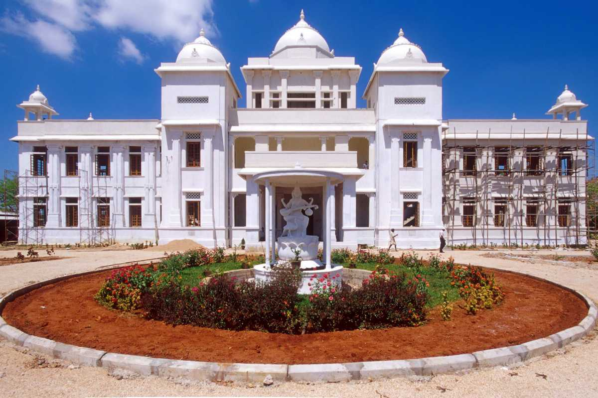
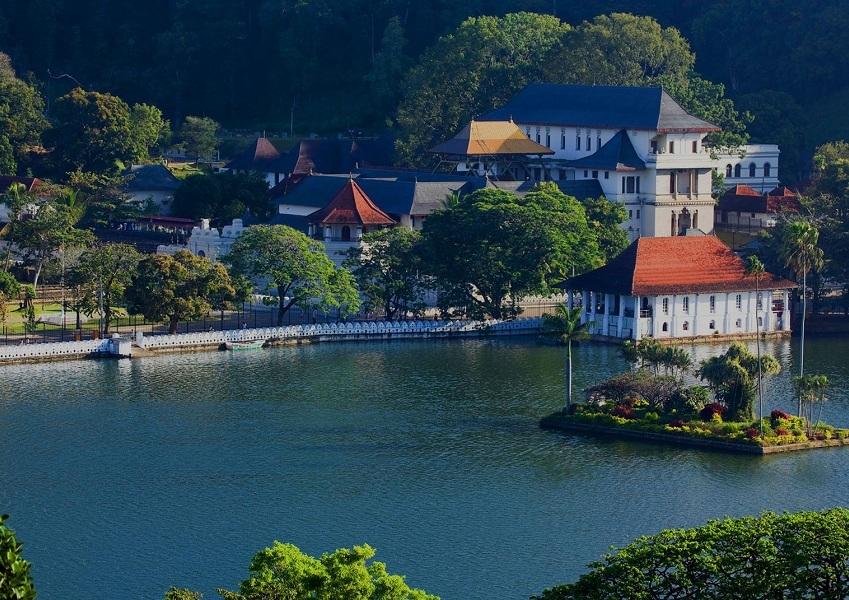

| KANDY | JAFFNA | GALLE |
|---|---|---|
The Temple of the Sacred Tooth Relic |
Nallur Tample |
Galle Dutch Fort |
Peradeniya Botanical Garden |
Public Library |
The National Museum of Galle.jpg) |
Kandy Lake |
Jaffna Fort |
Jungle Beach |